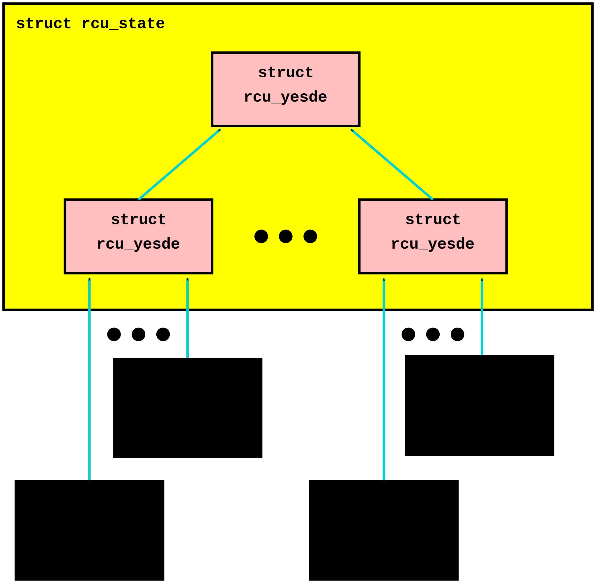
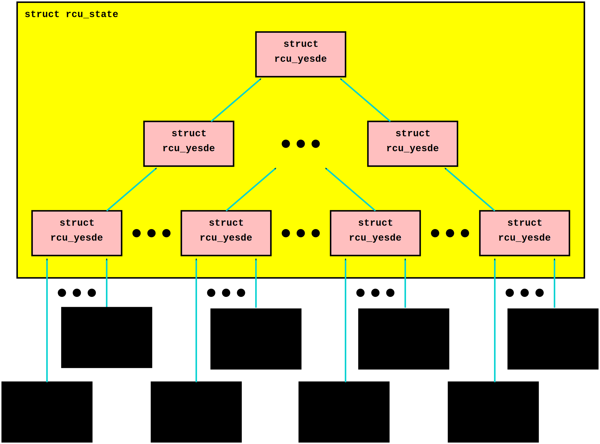
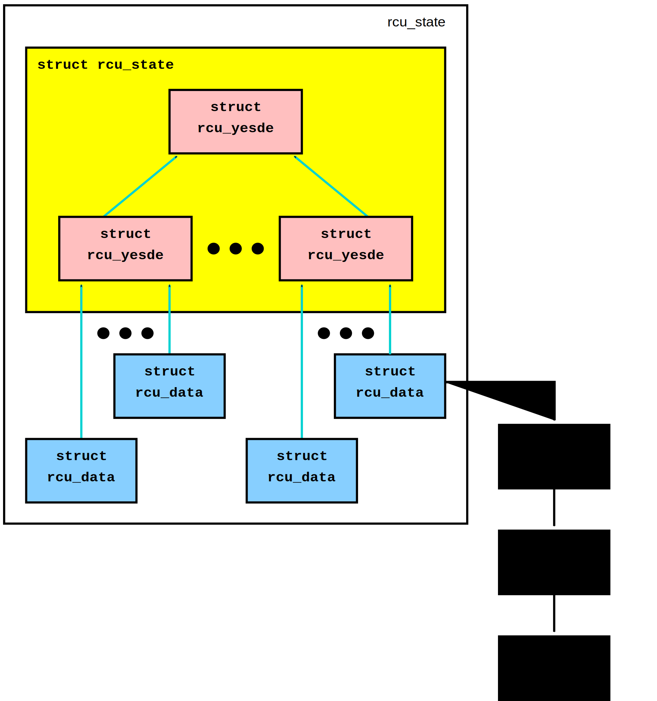
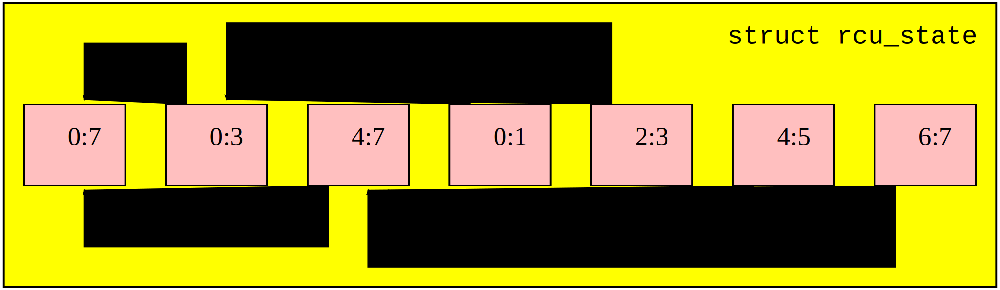
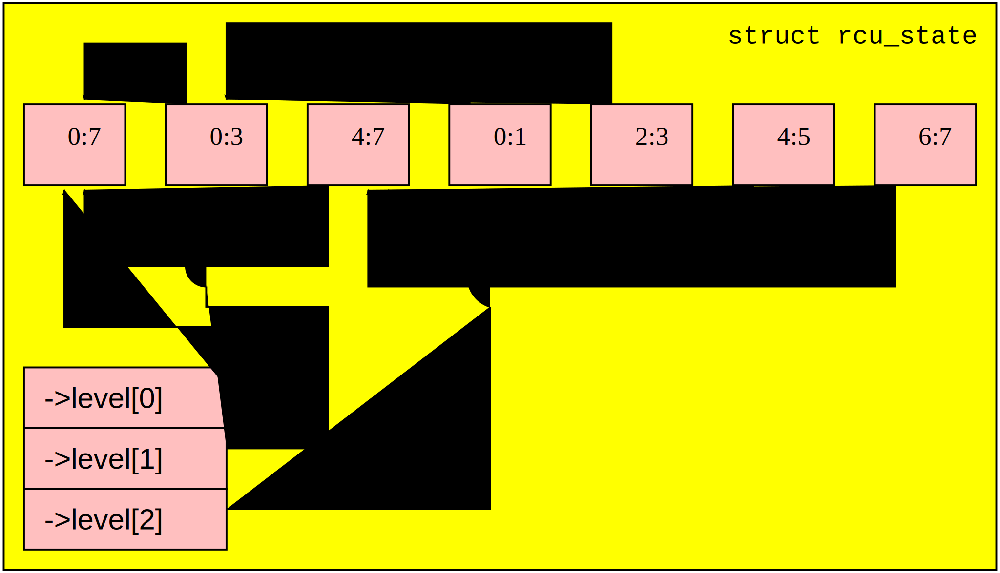
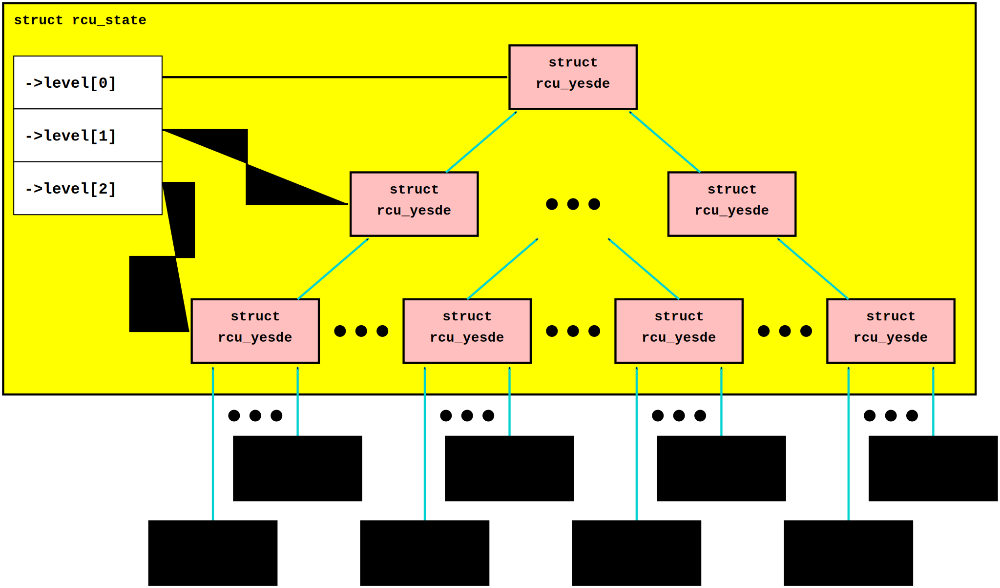
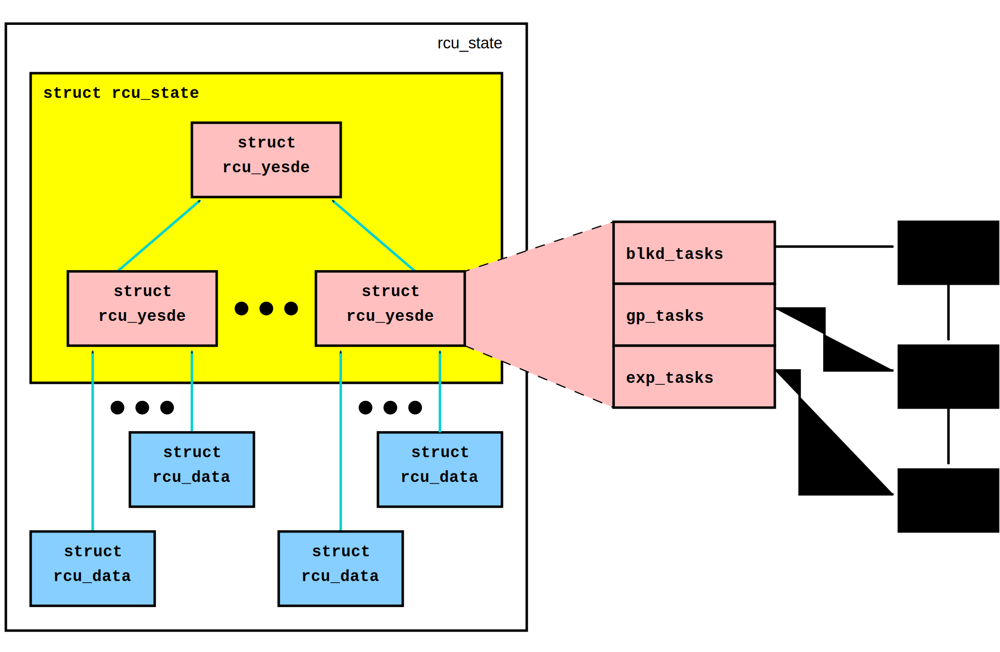
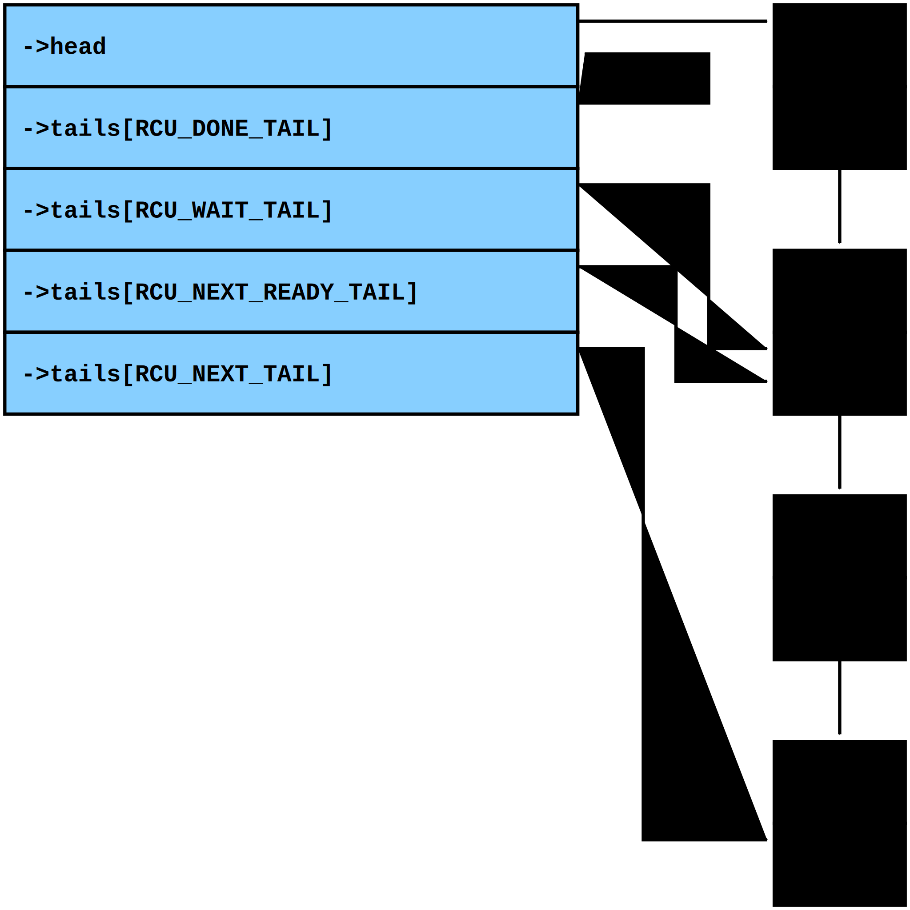

December 18, 2016
This article was contributed by Paul E. McKenney
RCU is for all intents and purposes a large state machine, and its data structures maintain the state in such a way as to allow RCU readers to execute extremely quickly, while also processing the RCU grace periods requested by updaters in an efficient and extremely scalable fashion. The efficiency and scalability of RCU updaters is provided primarily by a combining tree, as shown below:

This diagram shows an enclosing rcu_state structure containing a tree of rcu_node structures. Each leaf node of the rcu_node tree has up to 16 rcu_data structures associated with it, so that there are NR_CPUS number of rcu_data structures, one for each possible CPU. This structure is adjusted at boot time, if needed, to handle the common case where nr_cpu_ids is much less than NR_CPUs. For example, a number of Linux distributions set NR_CPUs=4096, which results in a three-level rcu_node tree. If the actual hardware has only 16 CPUs, RCU will adjust itself at boot time, resulting in an rcu_node tree with only a single node.
The purpose of this combining tree is to allow per-CPU events such as quiescent states, dyntick-idle transitions, and CPU hotplug operations to be processed efficiently and scalably. Quiescent states are recorded by the per-CPU rcu_data structures, and other events are recorded by the leaf-level rcu_node structures. All of these events are combined at each level of the tree until finally grace periods are completed at the tree's root rcu_node structure. A grace period can be completed at the root once every CPU (or, in the case of CONFIG_PREEMPT_RCU, task) has passed through a quiescent state. Once a grace period has completed, record of that fact is propagated back down the tree.
As can be seen from the diagram, on a 64-bit system a two-level tree with 64 leaves can accommodate 1,024 CPUs, with a fanout of 64 at the root and a fanout of 16 at the leaves.
| Quick Quiz: |
|---|
| Why isn't the fanout at the leaves also 64? |
| Answer: |
|
Because there are more types of events that affect the leaf-level
rcu_node structures than further up the tree.
Therefore, if the leaf rcu_node structures have fanout of
64, the contention on these structures' ->structures
becomes excessive.
Experimentation on a wide variety of systems has shown that a fanout
of 16 works well for the leaves of the rcu_node tree.
Of course, further experience with systems having hundreds or thousands of CPUs may demonstrate that the fanout for the non-leaf rcu_node structures must also be reduced. Such reduction can be easily carried out when and if it proves necessary. In the meantime, if you are using such a system and running into contention problems on the non-leaf rcu_node structures, you may use the CONFIG_RCU_FANOUT kernel configuration parameter to reduce the non-leaf fanout as needed. Kernels built for systems with strong NUMA characteristics might also need to adjust CONFIG_RCU_FANOUT so that the domains of the rcu_node structures align with hardware boundaries. However, there has thus far been no need for this. |
If your system has more than 1,024 CPUs (or more than 512 CPUs on a 32-bit system), then RCU will automatically add more levels to the tree. For example, if you are crazy enough to build a 64-bit system with 65,536 CPUs, RCU would configure the rcu_node tree as follows:

RCU currently permits up to a four-level tree, which on a 64-bit system accommodates up to 4,194,304 CPUs, though only a mere 524,288 CPUs for 32-bit systems. On the other hand, you can set CONFIG_RCU_FANOUT to be as small as 2 if you wish, which would permit only 16 CPUs, which is useful for testing.
This multi-level combining tree allows us to get most of the performance and scalability benefits of partitioning, even though RCU grace-period detection is inherently a global operation. The trick here is that only the last CPU to report a quiescent state into a given rcu_node structure need advance to the rcu_node structure at the next level up the tree. This means that at the leaf-level rcu_node structure, only one access out of sixteen will progress up the tree. For the internal rcu_node structures, the situation is even more extreme: Only one access out of sixty-four will progress up the tree. Because the vast majority of the CPUs do not progress up the tree, the lock contention remains roughly constant up the tree. No matter how many CPUs there are in the system, at most 64 quiescent-state reports per grace period will progress all the way to the root rcu_node structure, thus ensuring that the lock contention on that root rcu_node structure remains acceptably low.
In effect, the combining tree acts like a big shock absorber, keeping lock contention under control at all tree levels regardless of the level of loading on the system.
The Linux kernel actually supports multiple flavors of RCU running concurrently, so RCU builds separate data structures for each flavor. For example, for CONFIG_TREE_RCU=y kernels, RCU provides rcu_sched and rcu_bh, as shown below:
Energy efficiency is increasingly important, and for that reason the Linux kernel provides CONFIG_NO_HZ_IDLE, which turns off the scheduling-clock interrupts on idle CPUs, which in turn allows those CPUs to attain deeper sleep states and to consume less energy. CPUs whose scheduling-clock interrupts have been turned off are said to be in dyntick-idle mode. RCU must handle dyntick-idle CPUs specially because RCU would otherwise wake up each CPU on every grace period, which would defeat the whole purpose of CONFIG_NO_HZ_IDLE. RCU uses the rcu_dynticks structure to track which CPUs are in dyntick idle mode, as shown below:

However, if a CPU is in dyntick-idle mode, it is in that mode for all flavors of RCU. Therefore, a single rcu_dynticks structure is allocated per CPU, and all of a given CPU's rcu_data structures share that rcu_dynticks, as shown in the figure.
Kernels built with CONFIG_PREEMPT_RCU support rcu_preempt in addition to rcu_sched and rcu_bh, as shown below:

RCU updaters wait for normal grace periods by registering RCU callbacks, either directly via call_rcu() and friends (namely call_rcu_bh() and call_rcu_sched()), there being a separate interface per flavor of RCU) or indirectly via synchronize_rcu() and friends. RCU callbacks are represented by rcu_head structures, which are queued on rcu_data structures while they are waiting for a grace period to elapse, as shown in the following figure:

This figure shows how TREE_RCU's and PREEMPT_RCU's major data structures are related. Lesser data structures will be introduced with the algorithms that make use of them.
Note that each of the data structures in the above figure has its own synchronization:
It is important to note that different data structures can have very different ideas about the state of RCU at any given time. For but one example, awareness of the start or end of a given RCU grace period propagates slowly through the data structures. This slow propagation is absolutely necessary for RCU to have good read-side performance. If this balkanized implementation seems foreign to you, one useful trick is to consider each instance of these data structures to be a different person, each having the usual slightly different view of reality.
The general role of each of these data structures is as follows:
If all you wanted from this article was a general notion of how RCU's data structures are related, you are done. Otherwise, each of the following sections give more details on the rcu_state, rcu_node, rcu_data, and rcu_dynticks data structures.
The rcu_state structure is the base structure that represents a flavor of RCU. This structure forms the interconnection between the rcu_node and rcu_data structures, tracks grace periods, contains the lock used to synchronize with CPU-hotplug events, and maintains state used to force quiescent states when grace periods extend too long,
A few of the rcu_state structure's fields are discussed, singly and in groups, in the following sections. The more specialized fields are covered in the discussion of their use.
1 struct rcu_node node[NUM_RCU_NODES]; 2 struct rcu_node *level[NUM_RCU_LVLS + 1]; 3 struct rcu_data __percpu *rda;
| Quick Quiz: |
|---|
| Wait a minute! You said that the rcu_node structures formed a tree, but they are declared as a flat array! What gives? |
| Answer: |
|
The tree is laid out in the array.
The first node In the array is the head, the next set of nodes in the
array are children of the head node, and so on until the last set of
nodes in the array are the leaves.
See the following diagrams to see how this works. |
The rcu_node tree is embedded into the ->node[] array as shown in the following figure:

One interesting consequence of this mapping is that a breadth-first traversal of the tree is implemented as a simple linear scan of the array, which is in fact what the rcu_for_each_node_breadth_first() macro does. This macro is used at the beginning and ends of grace periods.
Each entry of the ->level array references the first rcu_node structure on the corresponding level of the tree, for example, as shown below:

The zeroth element of the array references the root rcu_node structure, the first element references the first child of the root rcu_node, and finally the second element references the first leaf rcu_node structure.
For whatever it is worth, if you draw the tree to be tree-shaped rather than array-shaped, it is easy to draw a planar representation:

Finally, the ->rda field references a per-CPU pointer to the corresponding CPU's rcu_data structure.
All of these fields are constant once initialization is complete, and therefore need no protection.
This portion of the rcu_state structure is declared as follows:
1 unsigned long gp_seq;
RCU grace periods are numbered, and the ->gp_seq field contains the current grace-period sequence number. The bottom two bits are the state of the current grace period, which can be zero for not yet started or one for in progress. In other words, if the bottom two bits of ->gp_seq are zero, the corresponding flavor of RCU is idle. Any other value in the bottom two bits indicates that something is broken. This field is protected by the root rcu_node structure's ->lock field.
There are ->gp_seq fields in the rcu_node and rcu_data structures as well. The fields in the rcu_state structure represent the most current value, and those of the other structures are compared in order to detect the beginnings and ends of grace periods in a distributed fashion. The values flow from rcu_state to rcu_node (down the tree from the root to the leaves) to rcu_data.
This portion of the rcu_state structure is declared as follows:
1 unsigned long gp_max; 2 char abbr; 3 char *name;
The ->gp_max field tracks the duration of the longest grace period in jiffies. It is protected by the root rcu_node's ->lock.
The ->name field points to the name of the RCU flavor (for example, “rcu_sched”), and is constant. The ->abbr field contains a one-character abbreviation, for example, “s” for RCU-sched.
The rcu_node structures form the combining tree that propagates quiescent-state information from the leaves to the root and also that propagates grace-period information from the root down to the leaves. They provides local copies of the grace-period state in order to allow this information to be accessed in a synchronized manner without suffering the scalability limitations that would otherwise be imposed by global locking. In CONFIG_PREEMPT_RCU kernels, they manage the lists of tasks that have blocked while in their current RCU read-side critical section. In CONFIG_PREEMPT_RCU with CONFIG_RCU_BOOST, they manage the per-rcu_node priority-boosting kernel threads (kthreads) and state. Finally, they record CPU-hotplug state in order to determine which CPUs should be ignored during a given grace period.
The rcu_node structure's fields are discussed, singly and in groups, in the following sections.
This portion of the rcu_node structure is declared as follows:
1 struct rcu_node *parent; 2 u8 level; 3 u8 grpnum; 4 unsigned long grpmask; 5 int grplo; 6 int grphi;
The ->parent pointer references the rcu_node one level up in the tree, and is NULL for the root rcu_node. The RCU implementation makes heavy use of this field to push quiescent states up the tree. The ->level field gives the level in the tree, with the root being at level zero, its children at level one, and so on. The ->grpnum field gives this node's position within the children of its parent, so this number can range between 0 and 31 on 32-bit systems and between 0 and 63 on 64-bit systems. The ->level and ->grpnum fields are used only during initialization and for tracing. The ->grpmask field is the bitmask counterpart of ->grpnum, and therefore always has exactly one bit set. This mask is used to clear the bit corresponding to this rcu_node structure in its parent's bitmasks, which are described later. Finally, the ->grplo and ->grphi fields contain the lowest and highest numbered CPU served by this rcu_node structure, respectively.
All of these fields are constant, and thus do not require any synchronization.
This field of the rcu_node structure is declared as follows:
1 raw_spinlock_t lock;
This field is used to protect the remaining fields in this structure, unless otherwise stated. That said, all of the fields in this structure can be accessed without locking for tracing purposes. Yes, this can result in confusing traces, but better some tracing confusion than to be heisenbugged out of existence.
This portion of the rcu_node structure is declared as follows:
1 unsigned long gp_seq; 2 unsigned long gp_seq_needed;
The rcu_node structures' ->gp_seq fields are the counterparts of the field of the same name in the rcu_state structure. They each may lag up to one step behind their rcu_state counterpart. If the bottom two bits of a given rcu_node structure's ->gp_seq field is zero, then this rcu_node structure believes that RCU is idle.
The >gp_seq field of each rcu_node structure is updated at the beginning and the end of each grace period.
The ->gp_seq_needed fields record the furthest-in-the-future grace period request seen by the corresponding rcu_node structure. The request is considered fulfilled when the value of the ->gp_seq field equals or exceeds that of the ->gp_seq_needed field.
| Quick Quiz: |
|---|
| Suppose that this rcu_node structure doesn't see a request for a very long time. Won't wrapping of the ->gp_seq field cause problems? |
| Answer: |
| No, because if the ->gp_seq_needed field lags behind the ->gp_seq field, the ->gp_seq_needed field will be updated at the end of the grace period. Modulo-arithmetic comparisons therefore will always get the correct answer, even with wrapping. |
These fields manage the propagation of quiescent states up the combining tree.
This portion of the rcu_node structure has fields as follows:
1 unsigned long qsmask; 2 unsigned long expmask; 3 unsigned long qsmaskinit; 4 unsigned long expmaskinit;
The ->qsmask field tracks which of this rcu_node structure's children still need to report quiescent states for the current normal grace period. Such children will have a value of 1 in their corresponding bit. Note that the leaf rcu_node structures should be thought of as having rcu_data structures as their children. Similarly, the ->expmask field tracks which of this rcu_node structure's children still need to report quiescent states for the current expedited grace period. An expedited grace period has the same conceptual properties as a normal grace period, but the expedited implementation accepts extreme CPU overhead to obtain much lower grace-period latency, for example, consuming a few tens of microseconds worth of CPU time to reduce grace-period duration from milliseconds to tens of microseconds. The ->qsmaskinit field tracks which of this rcu_node structure's children cover for at least one online CPU. This mask is used to initialize ->qsmask, and ->expmaskinit is used to initialize ->expmask and the beginning of the normal and expedited grace periods, respectively.
| Quick Quiz: |
|---|
| Why are these bitmasks protected by locking? Come on, haven't you heard of atomic instructions??? |
| Answer: |
|
Lockless grace-period computation! Such a tantalizing possibility!
But consider the following sequence of events:
So the locking is absolutely required in order to coordinate clearing of the bits with updating of the grace-period sequence number in ->gp_seq. |
PREEMPT_RCU allows tasks to be preempted in the midst of their RCU read-side critical sections, and these tasks must be tracked explicitly. The details of exactly why and how they are tracked will be covered in a separate article on RCU read-side processing. For now, it is enough to know that the rcu_node structure tracks them.
1 struct list_head blkd_tasks; 2 struct list_head *gp_tasks; 3 struct list_head *exp_tasks; 4 bool wait_blkd_tasks;
The ->blkd_tasks field is a list header for the list of blocked and preempted tasks. As tasks undergo context switches within RCU read-side critical sections, their task_struct structures are enqueued (via the task_struct's ->rcu_node_entry field) onto the head of the ->blkd_tasks list for the leaf rcu_node structure corresponding to the CPU on which the outgoing context switch executed. As these tasks later exit their RCU read-side critical sections, they remove themselves from the list. This list is therefore in reverse time order, so that if one of the tasks is blocking the current grace period, all subsequent tasks must also be blocking that same grace period. Therefore, a single pointer into this list suffices to track all tasks blocking a given grace period. That pointer is stored in ->gp_tasks for normal grace periods and in ->exp_tasks for expedited grace periods. These last two fields are NULL if either there is no grace period in flight or if there are no blocked tasks preventing that grace period from completing. If either of these two pointers is referencing a task that removes itself from the ->blkd_tasks list, then that task must advance the pointer to the next task on the list, or set the pointer to NULL if there are no subsequent tasks on the list.
For example, suppose that tasks T1, T2, and T3 are all hard-affinitied to the largest-numbered CPU in the system. Then if task T1 blocked in an RCU read-side critical section, then an expedited grace period started, then task T2 blocked in an RCU read-side critical section, then a normal grace period started, and finally task 3 blocked in an RCU read-side critical section, then the state of the last leaf rcu_node structure's blocked-task list would be as shown below:

Task T1 is blocking both grace periods, task T2 is blocking only the normal grace period, and task T3 is blocking neither grace period. Note that these tasks will not remove themselves from this list immediately upon resuming execution. They will instead remain on the list until they execute the outermost rcu_read_unlock() that ends their RCU read-side critical section.
The ->wait_blkd_tasks field indicates whether or not the current grace period is waiting on a blocked task.
The rcu_node array is sized via a series of C-preprocessor expressions as follows:
1 #ifdef CONFIG_RCU_FANOUT
2 #define RCU_FANOUT CONFIG_RCU_FANOUT
3 #else
4 # ifdef CONFIG_64BIT
5 # define RCU_FANOUT 64
6 # else
7 # define RCU_FANOUT 32
8 # endif
9 #endif
10
11 #ifdef CONFIG_RCU_FANOUT_LEAF
12 #define RCU_FANOUT_LEAF CONFIG_RCU_FANOUT_LEAF
13 #else
14 # ifdef CONFIG_64BIT
15 # define RCU_FANOUT_LEAF 64
16 # else
17 # define RCU_FANOUT_LEAF 32
18 # endif
19 #endif
20
21 #define RCU_FANOUT_1 (RCU_FANOUT_LEAF)
22 #define RCU_FANOUT_2 (RCU_FANOUT_1 * RCU_FANOUT)
23 #define RCU_FANOUT_3 (RCU_FANOUT_2 * RCU_FANOUT)
24 #define RCU_FANOUT_4 (RCU_FANOUT_3 * RCU_FANOUT)
25
26 #if NR_CPUS <= RCU_FANOUT_1
27 # define RCU_NUM_LVLS 1
28 # define NUM_RCU_LVL_0 1
29 # define NUM_RCU_NODES NUM_RCU_LVL_0
30 # define NUM_RCU_LVL_INIT { NUM_RCU_LVL_0 }
31 # define RCU_NODE_NAME_INIT { "rcu_node_0" }
32 # define RCU_FQS_NAME_INIT { "rcu_node_fqs_0" }
33 # define RCU_EXP_NAME_INIT { "rcu_node_exp_0" }
34 #elif NR_CPUS <= RCU_FANOUT_2
35 # define RCU_NUM_LVLS 2
36 # define NUM_RCU_LVL_0 1
37 # define NUM_RCU_LVL_1 DIV_ROUND_UP(NR_CPUS, RCU_FANOUT_1)
38 # define NUM_RCU_NODES (NUM_RCU_LVL_0 + NUM_RCU_LVL_1)
39 # define NUM_RCU_LVL_INIT { NUM_RCU_LVL_0, NUM_RCU_LVL_1 }
40 # define RCU_NODE_NAME_INIT { "rcu_node_0", "rcu_node_1" }
41 # define RCU_FQS_NAME_INIT { "rcu_node_fqs_0", "rcu_node_fqs_1" }
42 # define RCU_EXP_NAME_INIT { "rcu_node_exp_0", "rcu_node_exp_1" }
43 #elif NR_CPUS <= RCU_FANOUT_3
44 # define RCU_NUM_LVLS 3
45 # define NUM_RCU_LVL_0 1
46 # define NUM_RCU_LVL_1 DIV_ROUND_UP(NR_CPUS, RCU_FANOUT_2)
47 # define NUM_RCU_LVL_2 DIV_ROUND_UP(NR_CPUS, RCU_FANOUT_1)
48 # define NUM_RCU_NODES (NUM_RCU_LVL_0 + NUM_RCU_LVL_1 + NUM_RCU_LVL_2)
49 # define NUM_RCU_LVL_INIT { NUM_RCU_LVL_0, NUM_RCU_LVL_1, NUM_RCU_LVL_2 }
50 # define RCU_NODE_NAME_INIT { "rcu_node_0", "rcu_node_1", "rcu_node_2" }
51 # define RCU_FQS_NAME_INIT { "rcu_node_fqs_0", "rcu_node_fqs_1", "rcu_node_fqs_2" }
52 # define RCU_EXP_NAME_INIT { "rcu_node_exp_0", "rcu_node_exp_1", "rcu_node_exp_2" }
53 #elif NR_CPUS <= RCU_FANOUT_4
54 # define RCU_NUM_LVLS 4
55 # define NUM_RCU_LVL_0 1
56 # define NUM_RCU_LVL_1 DIV_ROUND_UP(NR_CPUS, RCU_FANOUT_3)
57 # define NUM_RCU_LVL_2 DIV_ROUND_UP(NR_CPUS, RCU_FANOUT_2)
58 # define NUM_RCU_LVL_3 DIV_ROUND_UP(NR_CPUS, RCU_FANOUT_1)
59 # define NUM_RCU_NODES (NUM_RCU_LVL_0 + NUM_RCU_LVL_1 + NUM_RCU_LVL_2 + NUM_RCU_LVL_3)
60 # define NUM_RCU_LVL_INIT { NUM_RCU_LVL_0, NUM_RCU_LVL_1, NUM_RCU_LVL_2, NUM_RCU_LVL_3 }
61 # define RCU_NODE_NAME_INIT { "rcu_node_0", "rcu_node_1", "rcu_node_2", "rcu_node_3" }
62 # define RCU_FQS_NAME_INIT { "rcu_node_fqs_0", "rcu_node_fqs_1", "rcu_node_fqs_2", "rcu_node_fqs_3" }
63 # define RCU_EXP_NAME_INIT { "rcu_node_exp_0", "rcu_node_exp_1", "rcu_node_exp_2", "rcu_node_exp_3" }
64 #else
65 # error "CONFIG_RCU_FANOUT insufficient for NR_CPUS"
66 #endif
The maximum number of levels in the rcu_node structure is currently limited to four, as specified by lines 21-24 and the structure of the subsequent “if” statement. For 32-bit systems, this allows 16*32*32*32=524,288 CPUs, which should be sufficient for the next few years at least. For 64-bit systems, 16*64*64*64=4,194,304 CPUs is allowed, which should see us through the next decade or so. This four-level tree also allows kernels built with CONFIG_RCU_FANOUT=8 to support up to 4096 CPUs, which might be useful in very large systems having eight CPUs per socket (but please note that no one has yet shown any measurable performance degradation due to misaligned socket and rcu_node boundaries). In addition, building kernels with a full four levels of rcu_node tree permits better testing of RCU's combining-tree code.
The RCU_FANOUT symbol controls how many children are permitted at each non-leaf level of the rcu_node tree. If the CONFIG_RCU_FANOUT Kconfig option is not specified, it is set based on the word size of the system, which is also the Kconfig default.
The RCU_FANOUT_LEAF symbol controls how many CPUs are handled by each leaf rcu_node structure. Experience has shown that allowing a given leaf rcu_node structure to handle 64 CPUs, as permitted by the number of bits in the ->qsmask field on a 64-bit system, results in excessive contention for the leaf rcu_node structures' ->lock fields. The number of CPUs per leaf rcu_node structure is therefore limited to 16 given the default value of CONFIG_RCU_FANOUT_LEAF. If CONFIG_RCU_FANOUT_LEAF is unspecified, the value selected is based on the word size of the system, just as for CONFIG_RCU_FANOUT. Lines 11-19 perform this computation.
Lines 21-24 compute the maximum number of CPUs supported by a single-level (which contains a single rcu_node structure), two-level, three-level, and four-level rcu_node tree, respectively, given the fanout specified by RCU_FANOUT and RCU_FANOUT_LEAF. These numbers of CPUs are retained in the RCU_FANOUT_1, RCU_FANOUT_2, RCU_FANOUT_3, and RCU_FANOUT_4 C-preprocessor variables, respectively.
These variables are used to control the C-preprocessor #if statement spanning lines 26-66 that computes the number of rcu_node structures required for each level of the tree, as well as the number of levels required. The number of levels is placed in the NUM_RCU_LVLS C-preprocessor variable by lines 27, 35, 44, and 54. The number of rcu_node structures for the topmost level of the tree is always exactly one, and this value is unconditionally placed into NUM_RCU_LVL_0 by lines 28, 36, 45, and 55. The rest of the levels (if any) of the rcu_node tree are computed by dividing the maximum number of CPUs by the fanout supported by the number of levels from the current level down, rounding up. This computation is performed by lines 37, 46-47, and 56-58. Lines 31-33, 40-42, 50-52, and 62-63 create initializers for lockdep lock-class names. Finally, lines 64-66 produce an error if the maximum number of CPUs is too large for the specified fanout.
1 #define RCU_DONE_TAIL 0
2 #define RCU_WAIT_TAIL 1
3 #define RCU_NEXT_READY_TAIL 2
4 #define RCU_NEXT_TAIL 3
5 #define RCU_CBLIST_NSEGS 4
6
7 struct rcu_segcblist {
8 struct rcu_head *head;
9 struct rcu_head **tails[RCU_CBLIST_NSEGS];
10 unsigned long gp_seq[RCU_CBLIST_NSEGS];
11 long len;
12 long len_lazy;
13 };
The segments are as follows:
The ->head pointer references the first callback or is NULL if the list contains no callbacks (which is not the same as being empty). Each element of the ->tails[] array references the ->next pointer of the last callback in the corresponding segment of the list, or the list's ->head pointer if that segment and all previous segments are empty. If the corresponding segment is empty but some previous segment is not empty, then the array element is identical to its predecessor. Older callbacks are closer to the head of the list, and new callbacks are added at the tail. This relationship between the ->head pointer, the ->tails[] array, and the callbacks is shown in this diagram:

In this figure, the ->head pointer references the first RCU callback in the list. The ->tails[RCU_DONE_TAIL] array element references the ->head pointer itself, indicating that none of the callbacks is ready to invoke. The ->tails[RCU_WAIT_TAIL] array element references callback CB 2's ->next pointer, which indicates that CB 1 and CB 2 are both waiting on the current grace period, give or take possible disagreements about exactly which grace period is the current one. The ->tails[RCU_NEXT_READY_TAIL] array element references the same RCU callback that ->tails[RCU_WAIT_TAIL] does, which indicates that there are no callbacks waiting on the next RCU grace period. The ->tails[RCU_NEXT_TAIL] array element references CB 4's ->next pointer, indicating that all the remaining RCU callbacks have not yet been assigned to an RCU grace period. Note that the ->tails[RCU_NEXT_TAIL] array element always references the last RCU callback's ->next pointer unless the callback list is empty, in which case it references the ->head pointer.
There is one additional important special case for the ->tails[RCU_NEXT_TAIL] array element: It can be NULL when this list is disabled. Lists are disabled when the corresponding CPU is offline or when the corresponding CPU's callbacks are offloaded to a kthread, both of which are described elsewhere.
CPUs advance their callbacks from the RCU_NEXT_TAIL to the RCU_NEXT_READY_TAIL to the RCU_WAIT_TAIL to the RCU_DONE_TAIL list segments as grace periods advance.
The ->gp_seq[] array records grace-period numbers corresponding to the list segments. This is what allows different CPUs to have different ideas as to which is the current grace period while still avoiding premature invocation of their callbacks. In particular, this allows CPUs that go idle for extended periods to determine which of their callbacks are ready to be invoked after reawakening.
The ->len counter contains the number of callbacks in ->head, and the ->len_lazy contains the number of those callbacks that are known to only free memory, and whose invocation can therefore be safely deferred.
Important note: It is the ->len field that determines whether or not there are callbacks associated with this rcu_segcblist structure, not the ->head pointer. The reason for this is that all the ready-to-invoke callbacks (that is, those in the RCU_DONE_TAIL segment) are extracted all at once at callback-invocation time. If callback invocation must be postponed, for example, because a high-priority process just woke up on this CPU, then the remaining callbacks are placed back on the RCU_DONE_TAIL segment. Either way, the ->len and ->len_lazy counts are adjusted after the corresponding callbacks have been invoked, and so again it is the ->len count that accurately reflects whether or not there are callbacks associated with this rcu_segcblist structure. Of course, off-CPU sampling of the ->len count requires the use of appropriate synchronization, for example, memory barriers. This synchronization can be a bit subtle, particularly in the case of rcu_barrier().
The rcu_data maintains the per-CPU state for the corresponding flavor of RCU. The fields in this structure may be accessed only from the corresponding CPU (and from tracing) unless otherwise stated. This structure is the focus of quiescent-state detection and RCU callback queuing. It also tracks its relationship to the corresponding leaf rcu_node structure to allow more-efficient propagation of quiescent states up the rcu_node combining tree. Like the rcu_node structure, it provides a local copy of the grace-period information to allow for-free synchronized access to this information from the corresponding CPU. Finally, this structure records past dyntick-idle state for the corresponding CPU and also tracks statistics.
The rcu_data structure's fields are discussed, singly and in groups, in the following sections.
This portion of the rcu_data structure is declared as follows:
1 int cpu; 2 struct rcu_state *rsp; 3 struct rcu_node *mynode; 4 struct rcu_dynticks *dynticks; 5 unsigned long grpmask; 6 bool beenonline;
The ->cpu field contains the number of the corresponding CPU, the ->rsp pointer references the corresponding rcu_state structure (and is most frequently used to locate the name of the corresponding flavor of RCU for tracing), and the ->mynode field references the corresponding rcu_node structure. The ->mynode is used to propagate quiescent states up the combining tree.
The ->dynticks pointer references the rcu_dynticks structure corresponding to this CPU. Recall that a single per-CPU instance of the rcu_dynticks structure is shared among all flavors of RCU. These first four fields are constant and therefore require not synchronization.
The ->grpmask field indicates the bit in the ->mynode->qsmask corresponding to this rcu_data structure, and is also used when propagating quiescent states. The ->beenonline flag is set whenever the corresponding CPU comes online, which means that the debugfs tracing need not dump out any rcu_data structure for which this flag is not set.
This portion of the rcu_data structure is declared as follows:
1 unsigned long gp_seq; 2 unsigned long gp_seq_needed; 3 bool cpu_no_qs; 4 bool core_needs_qs; 5 bool gpwrap; 6 unsigned long rcu_qs_ctr_snap;
The ->gp_seq and ->gp_seq_needed fields are the counterparts of the fields of the same name in the rcu_state and rcu_node structures. They may each lag up to one behind their rcu_node counterparts, but in CONFIG_NO_HZ_IDLE and CONFIG_NO_HZ_FULL kernels can lag arbitrarily far behind for CPUs in dyntick-idle mode (but these counters will catch up upon exit from dyntick-idle mode). If the lower two bits of a given rcu_data structure's ->gp_seq are zero, then this rcu_data structure believes that RCU is idle.
| Quick Quiz: |
|---|
| All this replication of the grace period numbers can only cause massive confusion. Why not just keep a global sequence number and be done with it??? |
| Answer: |
| Because if there was only a single global sequence numbers, there would need to be a single global lock to allow safely accessing and updating it. And if we are not going to have a single global lock, we need to carefully manage the numbers on a per-node basis. Recall from the answer to a previous Quick Quiz that the consequences of applying a previously sampled quiescent state to the wrong grace period are quite severe. |
The ->cpu_no_qs flag indicates that the CPU has not yet passed through a quiescent state, while the ->core_needs_qs flag indicates that the RCU core needs a quiescent state from the corresponding CPU. The ->gpwrap field indicates that the corresponding CPU has remained idle for so long that the gp_seq counter is in danger of overflow, which will cause the CPU to disregard the values of its counters on its next exit from idle. Finally, the rcu_qs_ctr_snap field is used to detect cases where a given operation has resulted in a quiescent state for all flavors of RCU, for example, cond_resched() when RCU has indicated a need for quiescent states.
In the absence of CPU-hotplug events, RCU callbacks are invoked by the same CPU that registered them. This is strictly a cache-locality optimization: callbacks can and do get invoked on CPUs other than the one that registered them. After all, if the CPU that registered a given callback has gone offline before the callback can be invoked, there really is no other choice.
This portion of the rcu_data structure is declared as follows:
1 struct rcu_segcblist cblist; 2 long qlen_last_fqs_check; 3 unsigned long n_cbs_invoked; 4 unsigned long n_nocbs_invoked; 5 unsigned long n_cbs_orphaned; 6 unsigned long n_cbs_adopted; 7 unsigned long n_force_qs_snap; 8 long blimit;
The ->cblist structure is the segmented callback list described earlier. The CPU advances the callbacks in its rcu_data structure whenever it notices that another RCU grace period has completed. The CPU detects the completion of an RCU grace period by noticing that the value of its rcu_data structure's ->gp_seq field differs from that of its leaf rcu_node structure. Recall that each rcu_node structure's ->gp_seq field is updated at the beginnings and ends of each grace period.
The ->qlen_last_fqs_check and ->n_force_qs_snap coordinate the forcing of quiescent states from call_rcu() and friends when callback lists grow excessively long.
The ->n_cbs_invoked, ->n_cbs_orphaned, and ->n_cbs_adopted fields count the number of callbacks invoked, sent to other CPUs when this CPU goes offline, and received from other CPUs when those other CPUs go offline. The ->n_nocbs_invoked is used when the CPU's callbacks are offloaded to a kthread.
Finally, the ->blimit counter is the maximum number of RCU callbacks that may be invoked at a given time.
This portion of the rcu_data structure is declared as follows:
1 int dynticks_snap; 2 unsigned long dynticks_fqs;The ->dynticks_snap field is used to take a snapshot of the corresponding CPU's dyntick-idle state when forcing quiescent states, and is therefore accessed from other CPUs. Finally, the ->dynticks_fqs field is used to count the number of times this CPU is determined to be in dyntick-idle state, and is used for tracing and debugging purposes.
The rcu_dynticks maintains the per-CPU dyntick-idle state for the corresponding CPU. Unlike the other structures, rcu_dynticks is not replicated over the different flavors of RCU. The fields in this structure may be accessed only from the corresponding CPU (and from tracing) unless otherwise stated. Its fields are as follows:
1 long dynticks_nesting; 2 long dynticks_nmi_nesting; 3 atomic_t dynticks; 4 bool rcu_need_heavy_qs; 5 unsigned long rcu_qs_ctr; 6 bool rcu_urgent_qs;
The ->dynticks_nesting field counts the nesting depth of process execution, so that in normal circumstances this counter has value zero or one. NMIs, irqs, and tracers are counted by the ->dynticks_nmi_nesting field. Because NMIs cannot be masked, changes to this variable have to be undertaken carefully using an algorithm provided by Andy Lutomirski. The initial transition from idle adds one, and nested transitions add two, so that a nesting level of five is represented by a ->dynticks_nmi_nesting value of nine. This counter can therefore be thought of as counting the number of reasons why this CPU cannot be permitted to enter dyntick-idle mode, aside from process-level transitions.
However, it turns out that when running in non-idle kernel context, the Linux kernel is fully capable of entering interrupt handlers that never exit and perhaps also vice versa. Therefore, whenever the ->dynticks_nesting field is incremented up from zero, the ->dynticks_nmi_nesting field is set to a large positive number, and whenever the ->dynticks_nesting field is decremented down to zero, the the ->dynticks_nmi_nesting field is set to zero. Assuming that the number of misnested interrupts is not sufficient to overflow the counter, this approach corrects the ->dynticks_nmi_nesting field every time the corresponding CPU enters the idle loop from process context.
The ->dynticks field counts the corresponding CPU's transitions to and from either dyntick-idle or user mode, so that this counter has an even value when the CPU is in dyntick-idle mode or user mode and an odd value otherwise. The transitions to/from user mode need to be counted for user mode adaptive-ticks support (see timers/NO_HZ.txt).
The ->rcu_need_heavy_qs field is used to record the fact that the RCU core code would really like to see a quiescent state from the corresponding CPU, so much so that it is willing to call for heavy-weight dyntick-counter operations. This flag is checked by RCU's context-switch and cond_resched() code, which provide a momentary idle sojourn in response.
The ->rcu_qs_ctr field is used to record quiescent states from cond_resched(). Because cond_resched() can execute quite frequently, this must be quite lightweight, as in a non-atomic increment of this per-CPU field.
Finally, the ->rcu_urgent_qs field is used to record the fact that the RCU core code would really like to see a quiescent state from the corresponding CPU, with the various other fields indicating just how badly RCU wants this quiescent state. This flag is checked by RCU's context-switch and cond_resched() code, which, if nothing else, non-atomically increment ->rcu_qs_ctr in response.
| Quick Quiz: |
|---|
| Why not simply combine the ->dynticks_nesting and ->dynticks_nmi_nesting counters into a single counter that just counts the number of reasons that the corresponding CPU is non-idle? |
| Answer: |
| Because this would fail in the presence of interrupts whose handlers never return and of handlers that manage to return from a made-up interrupt. |
Additional fields are present for some special-purpose builds, and are discussed separately.
Each rcu_head structure represents an RCU callback. These structures are normally embedded within RCU-protected data structures whose algorithms use asynchronous grace periods. In contrast, when using algorithms that block waiting for RCU grace periods, RCU users need not provide rcu_head structures.
The rcu_head structure has fields as follows:
1 struct rcu_head *next; 2 void (*func)(struct rcu_head *head);
The ->next field is used to link the rcu_head structures together in the lists within the rcu_data structures. The ->func field is a pointer to the function to be called when the callback is ready to be invoked, and this function is passed a pointer to the rcu_head structure. However, kfree_rcu() uses the ->func field to record the offset of the rcu_head structure within the enclosing RCU-protected data structure.
Both of these fields are used internally by RCU. From the viewpoint of RCU users, this structure is an opaque “cookie”.
| Quick Quiz: |
|---|
| Given that the callback function ->func is passed a pointer to the rcu_head structure, how is that function supposed to find the beginning of the enclosing RCU-protected data structure? |
| Answer: |
| In actual practice, there is a separate callback function per type of RCU-protected data structure. The callback function can therefore use the container_of() macro in the Linux kernel (or other pointer-manipulation facilities in other software environments) to find the beginning of the enclosing structure. |
The CONFIG_PREEMPT_RCU implementation uses some additional fields in the task_struct structure:
1 #ifdef CONFIG_PREEMPT_RCU 2 int rcu_read_lock_nesting; 3 union rcu_special rcu_read_unlock_special; 4 struct list_head rcu_node_entry; 5 struct rcu_node *rcu_blocked_node; 6 #endif /* #ifdef CONFIG_PREEMPT_RCU */ 7 #ifdef CONFIG_TASKS_RCU 8 unsigned long rcu_tasks_nvcsw; 9 bool rcu_tasks_holdout; 10 struct list_head rcu_tasks_holdout_list; 11 int rcu_tasks_idle_cpu; 12 #endif /* #ifdef CONFIG_TASKS_RCU */
The ->rcu_read_lock_nesting field records the nesting level for RCU read-side critical sections, and the ->rcu_read_unlock_special field is a bitmask that records special conditions that require rcu_read_unlock() to do additional work. The ->rcu_node_entry field is used to form lists of tasks that have blocked within preemptible-RCU read-side critical sections and the ->rcu_blocked_node field references the rcu_node structure whose list this task is a member of, or NULL if it is not blocked within a preemptible-RCU read-side critical section.
The ->rcu_tasks_nvcsw field tracks the number of voluntary context switches that this task had undergone at the beginning of the current tasks-RCU grace period, ->rcu_tasks_holdout is set if the current tasks-RCU grace period is waiting on this task, ->rcu_tasks_holdout_list is a list element enqueuing this task on the holdout list, and ->rcu_tasks_idle_cpu tracks which CPU this idle task is running, but only if the task is currently running, that is, if the CPU is currently idle.
The following listing shows the rcu_get_root(), rcu_for_each_node_breadth_first and rcu_for_each_leaf_node() function and macros:
1 static struct rcu_node *rcu_get_root(struct rcu_state *rsp)
2 {
3 return &rsp->node[0];
4 }
5
6 #define rcu_for_each_node_breadth_first(rsp, rnp) \
7 for ((rnp) = &(rsp)->node[0]; \
8 (rnp) < &(rsp)->node[NUM_RCU_NODES]; (rnp)++)
9
10 #define rcu_for_each_leaf_node(rsp, rnp) \
11 for ((rnp) = (rsp)->level[NUM_RCU_LVLS - 1]; \
12 (rnp) < &(rsp)->node[NUM_RCU_NODES]; (rnp)++)
The rcu_get_root() simply returns a pointer to the first element of the specified rcu_state structure's ->node[] array, which is the root rcu_node structure.
As noted earlier, the rcu_for_each_node_breadth_first() macro takes advantage of the layout of the rcu_node structures in the rcu_state structure's ->node[] array, performing a breadth-first traversal by simply traversing the array in order. Similarly, the rcu_for_each_leaf_node() macro traverses only the last part of the array, thus traversing only the leaf rcu_node structures.
| Quick Quiz: |
|---|
| What does rcu_for_each_leaf_node() do if the rcu_node tree contains only a single node? |
| Answer: |
| In the single-node case, rcu_for_each_leaf_node() traverses the single node. |
This work represents the view of the author and does not necessarily represent the view of IBM.
Linux is a registered trademark of Linus Torvalds.
Other company, product, and service names may be trademarks or service marks of others.